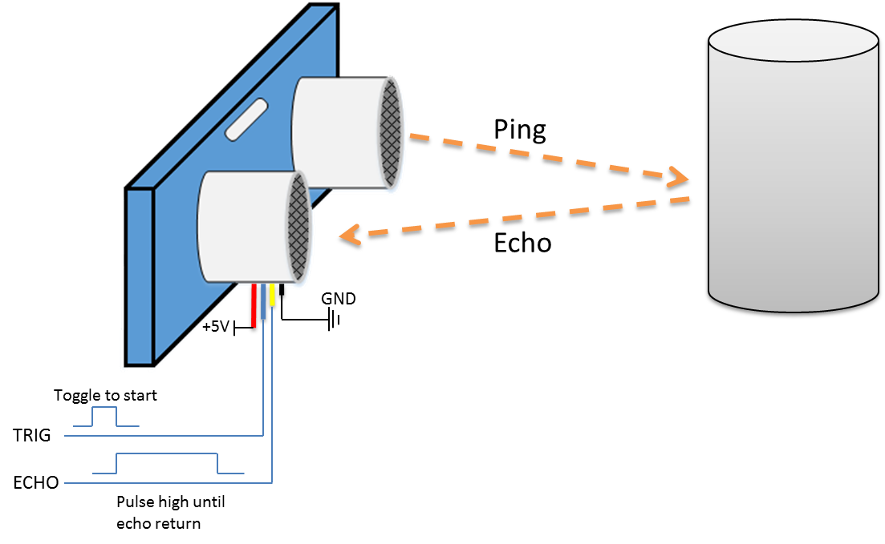

[RTL8722CSM] [RTL8722DM] GPIO – Measure The Distance By Ultrasound Module¶
Preparation
Ameba x 1
HC-SR04 Ultrasonic x 1
Dropping resistor or Level converter
Example
HC-SR04 is a module that uses ultrasound to measure the distance. It
looks like a pair of eyes in its appearance, therefore it’s often
installed onto robot-vehicle or mechanical bugs to be their eyes. The
way it works is that first we “toggle high” the TRIG pin (that is to
pull high then pull low). The HC-SR04 would send eight 40kHz sound wave
signal and pull high the ECHO pin. When the sound wave returns back, it
pull low the ECHO pin.Assume the velocity of sound is 340 m/s,
the time it takes for the sound to advance 1 cm in the air is
340*100*10^-6 = 29 us。 The sound wave actually travels twice the
distance between HC-SR04 and the object, therefore the distance can be
calculated by (time/29) / 2 = time / 58。 The working voltage of HC-SR04
is 5V. When we pull high the ECHO pin to 5V, the voltage might cause
damage to the GPIO pin of Ameba. To avoid this situation, we need to
drop the voltage as follows: We pick the resistors with resistance
1:2, in the example we use 10kΩ and 20kΩ. If you do not have resistors
in hand, you can use level converter instead.The TXB0108 8 channel level
converter is a suitable example:
We pick the resistors with resistance
1:2, in the example we use 10kΩ and 20kΩ. If you do not have resistors
in hand, you can use level converter instead.The TXB0108 8 channel level
converter is a suitable example: Next, open the sample code in
“File” -> “Examples” -> “AmebaGPIO” ->
“HCSR04_Ultrasonic”
Next, open the sample code in
“File” -> “Examples” -> “AmebaGPIO” ->
“HCSR04_Ultrasonic” Compile and upload to Ameba, then press
the reset button. Open the Serial Monitor, the calculated result is
output to serial monitor every 2 seconds.
Compile and upload to Ameba, then press
the reset button. Open the Serial Monitor, the calculated result is
output to serial monitor every 2 seconds. Note that the HCSR04
module uses the reflection of sound wave to calculate the distance, thus
the result can be affected by the surface material of the object (e.g.,
harsh surface tends to cause scattering of sound wave, and soft surface
may cause the sound wave to be absorbed).
Note that the HCSR04
module uses the reflection of sound wave to calculate the distance, thus
the result can be affected by the surface material of the object (e.g.,
harsh surface tends to cause scattering of sound wave, and soft surface
may cause the sound wave to be absorbed).
{kind=link}
Code Reference
Before the measurement starts, we need to pull high the TRIG pin for 10us and then pull low. By doing this, we are telling the HC-SR04 that we are about to start the measurement:
digitalWrite(trigger_pin, HIGH);
delayMicroseconds(10);
digitalWrite(trigger_pin, LOW);
Next, use pulseIn to measure the time when the ECHO pin is pulled high.
duration = pulseIn (echo_pin, HIGH);
Finally, use the formula to calculate the distance.
distance = duration / 58;